<nav class="navbar navbar-expand-lg navbar-dark bg-inverse" style="background-color: #004379">
    <div class="container-fluid">
        <a class="navbar-brand" [routerLink]="['/home']">
            
        </a>
        <button class="navbar-toggler" type="button" data-bs-toggle="collapse" data-bs-target="#navbarSupportedContent" aria-controls="navbarSupportedContent" aria-expanded="false" aria-label="Toggle navigation">
            <span class="navbar-toggler-icon" ></span>
        </button>

        <div class="collapse navbar-collapse" id="navbarSupportedContent">
            <ul class="navbar-nav me-auto mb-2 mb-lg-0">
                <li class="nav-item" style="margin-left: 30px; font-weight: 700;" routerLinkActive="active">
                    <a class="nav-link" aria-current="page" [routerLink]="['/totalAlumnos']">Asistencia Total Alumnos</a>
                </li>
                <li class="nav-item" style="margin-left: 30px; font-weight: 700;" routerLinkActive="active">
                    <a class="nav-link" [routerLink]="['/manual']">Asistencia Presencial</a>
                </li>
                <li class="nav-item" style="margin-left: 30px; font-weight: 700;" routerLinkActive="active">
                    <a class="nav-link" aria-current="page" [routerLink]="['/documentos']">Documentos</a>
                </li>
                <li class="nav-item" style="margin-left: 30px; font-weight: 700;" routerLinkActive="active">
                    <a class="nav-link" [routerLink]="['/actas']">Actas</a>
                </li>
            </ul>
        </div>
    </div>

    <div>
        <button type="submit" class="btn btn-primary boton-desconectar btn-block " (click)="salir()">
            
        </button>
    </div>
</nav>
